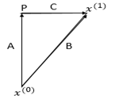

Support Vector Machine (SVM)#
Provided By Samaneh Dandani
Contact : samanedandani@gmail.com

The Support Vector Machine (SVM) algorithm was originally developed in 1964 by Vladimir Vapnik and Alexey Chervonenkis at the Institute of Control Sciences of the Russian Academy of Sciences. In 1992, Boser, Isabelle Guyon, and Vapnik introduced the kernel trick to SVM, providing a method for nonlinear classification. In 1995, Corinna Cortes and Vapnik introduced the soft-margin SVM. The Support Vector Machine (SVM) is a supervised learning model in machine learning that, given labeled training data, constructs an optimal hyperplane to classify new data into different categories.
What is a Support Vector Machine (SVM)?#
A Support Vector Machine (SVM) is a supervised learning method used for classification and regression tasks. The basis of the SVM classifier is the linear classification of data. It separates the data using a line or hyperplane, ensuring that the separation has the maximum margin of confidence. Data on one side of the line are similar and belong to the same group. New data, when added to the same space, will be classified into one of the existing categories. If the data cannot be separated using linear programming methods, nonlinear programming methods are used to find the optimal line. These are well-known methods for solving constrained problems. Before linear separation, to enable the machine to classify highly complex data, the data are mapped to a higher-dimensional space using a function called phi. To solve the high-dimensional problem using these methods, the Lagrangian dual theorem is employed to transform the minimization problem into its dual form. In this form, instead of the complex phi function, which maps to a high-dimensional space, a simpler function called the kernel function, which is the dot product of the phi function, appears. Various kernel functions can be used, including exponential, polynomial, and sigmoid kernels.
Examining Some Common Concepts in the Support Vector Machine Algorithm#
Margin: In SVM, the margin refers to the space between the classified data groups. Think of the margin as a safe zone between two groups we want to separate; the goal is to widen this zone as much as possible so that even if new data are added, they can be classified with greater confidence. A larger margin indicates a stronger separation and, consequently, a more accurate model.
Hyperplane: In SVM, a hyperplane is a line or plane that separates data into two categories. In a two-dimensional space, it is a straight line; however, in higher-dimensional spaces, it becomes a larger plane that can separate data across different dimensions. The optimal hyperplane is the one that creates the largest margin between the different classes of data. Feature Space The feature space refers to the dimension or domain in which the data are represented and analyzed. In SVM, transforming data into a higher-dimensional feature space allows for the linear separation of data that are not linearly separable in their original dimensions.
Kernels: Kernels in SVM allow us to transform data that are not linearly separable into a higher-dimensional feature space where separation is possible. There are various types of kernels, each suitable for different data and problems. The most common kernels include the linear kernel, polynomial kernel, radial basis function (RBF) kernel, and sigmoid kernel.
Linear Support Vector Machine#
Given a dataset consisting of \( n \) elements, defined as follows:
The value of \( y \) is either 1 or -1, and each \( x_i \) is a real-valued vector of \( P \) dimensions. The goal is to find the separating hyperplane with the maximum margin from the support vectors that separate the points with \( y_i = 1 \) from the points with \( y_i = -1 \). Each hyperplane can be written as a set of points that satisfy the following condition:
where \( \cdot \) denotes the dot product, \( w \) is the normal vector, which is perpendicular to the hyperplane, and \( b \) is the bias term. We want to choose \( w \) and \( b \) such that the distance between the parallel hyperplanes that separate the data is maximized. These hyperplanes are described by the following relation:
Any data point above the separating hyperplane is labeled as 1:
And any data point below the separating hyperplane is labeled as -1:
Now we want to determine the margin m:
We focus on the right-angled triangle with vertices 〖〖P,x〗^((1)),x〗^((0)):

For simplicity, we name the vectors as follows:
Vector Addition:
This states that vector \(\vec{B}\) is the sum of vectors \(\vec{A}\) and \(\vec{C}\).
Difference of Two Points:
Here, \(\vec{B}\) represents the vector obtained by subtracting point \(x^{(0)}\) from point \(x^{(1)}\).
Scaled Normal Vector:
Vector \(\vec{A}\) is the normal vector \(\vec{w}\) scaled by the ratio of the magnitudes of \(\vec{A}\) and \(\vec{w}\).
Orthogonality Condition:
This indicates that vectors \(\vec{A}\) and \(\vec{C}\) are orthogonal (their dot product is zero).
Vector Relationships and Norm Calculations#
Given the vector relationships and the goal to derive the margin in a Support Vector Machine context, let’s proceed with the step-by-step derivation.
Starting Equation:
Expanding the Dot Product:
Orthogonality Condition: Since \(\vec{A}\) and \(\vec{C}\) are orthogonal:
Norm of Vector \(\vec{A}\):
So,
Substituting \(\vec{A}\):
Expanding \(\vec{B}\):
Dot Product with \(\vec{w}\):
Solving for \(\|\vec{A}\|\):
Using Hyperplane Definitions: For \( x^{(1)} \) on \( w^T x + b = 1 \) and \( x^{(0)} \) on \( w^T x + b = -1 \):
Subtracting the Hyperplane Equations:
Final Norm Calculation:
Therefore, the margin \( m \) is given by:
In Support Vector Machines, we aim to maximize the margin, which is the distance between the supporting vectors. Therefore, we minimize \(\|\vec{w}\|\)
To maximize the margin \( m \) in a Support Vector Machine (SVM), you aim to maximize the distance between the separating hyperplanes. Given the relationship between the margin and the norm of the normal vector \( \vec{w} \), you can express this as follows:
The goal is to maximize \( m \), which translates to:
Hard-margin#
For the hard-margin case, in the simple scenario where the training data is linearly separable, the goal is to find a separating hyperplane that maximizes the margin between the two classes of data points. We can consider two parallel hyperplanes that do not intersect any data points and then aim to maximize the distance between them. The distance between these two hyperplanes is \( \frac{2}{\|\vec{w}\|} \) Therefore, we need to minimize \(\|\vec{w}\|\)
To prevent data points from entering the margin, we introduce the following conditions for each i:
The ε-insensitive loss function:#
We write the expression as follows:
subject to:
In which \( \|\vec{w}\| = \sum_{j=1}^d |w_j| \) represents the 1-norm. This optimization problem is challenging because it depends on \( \|\vec{w}\| \) (the norm or length of the vector). Now, without changing the problem, we replace \( \|\vec{w}\|^2 \) with \( \frac{1}{2} \|\vec{w}\|^2 \) (the factor of \( \frac{1}{2} \) is for mathematical convenience). This is a quadratic programming (QP) non-linear optimization (OP) problem.
You can express the previous phrase using Lagrange as follows:
Now we take the derivative with respect to \( \vec{w} \) and \( b \):
We note that \( \alpha_i \geq 0 \) and \( \sum_{i=1}^n \alpha_i y_i = 0 \). Now, we have managed to express the Lagrange function in terms of a single variable, \( \alpha \). In mathematics, this problem is recognized as the dual problem. If we find \( \vec{w} \), then we will be able to determine all \( \alpha_i \), and vice versa. The derived function from the dual problem must be maximized. Therefore, the problem is formulated as follows:
subject to: $\( \sum_{i=1}^n \alpha_i y_i = 0 \)$
This is a nonlinear programming problem where \( \vec{w} \) is obtained using the formula \( \vec{w} = \sum_{i=1}^n \alpha_i y_i x_i \), and once \( \vec{w} \) is determined, each \( \alpha_i \) can be computed.
Characteristics of the Solution:#
Most of the \( \alpha_i \)‘s obtained are zero.
The \( x_i \)‘s corresponding to non-zero \( \alpha_i \)‘s are recognized as Support Vectors (SV).
\( \vec{w} \) is a linear combination of a small number of data points.
Using the Support Vectors (SV) and the obtained \( \vec{w} \), \( b \) can also be calculated:
Classification can also be derived from the following relationship:
Soft-margin#
Using the hard-margin method can impose constraints in certain cases, one of which is a strong dependence of the separating hyperplane on the boundary data points. If a data point lies on the boundary of the separating hyperplane, it can lead to a reduction in margin and significant changes in the intended hyperplane. This point is crucial because real-world data often contain some level of noise, potentially resulting in undesirable effects on the decision boundary. Therefore, hard-margin models are highly susceptible to overfitting.
To prevent and address this issue, the concept of soft-margin was introduced, allowing some data points to be misclassified during the model training process and violating the determined margin. This approach aims to prevent overfitting during testing. In this scenario, we tolerate classification errors. Sometimes, a few data points from one class, especially when their number is not very large, are situated among data points of another class. In such cases, it is not straightforward to find an optimal separating hyperplane that completely separates the two classes. In other words, this method introduces a level of generalization to the model to perform better on test data.
It’s important to note that to prevent a decrease in model accuracy, this approach is controlled by adding a series of parameters known as slack variables, denoted by \( \xi \). These variables quantify the extent to which each data point deviates from the prescribed margin. If their value is zero, it indicates that the data point is correctly positioned with respect to the margin. If their value is greater than zero, it signifies the degree of error.
Therefore, to incorporate the concept of proximity of data points to other classes, we use the hinge loss function:
We also write the expression like this:
subject to
Here we take \( \rho = 1 \) and set \( \lambda = C \) and \( C \) behind \( \sum \):
subject to
In fact, we allow for classification errors. Sometimes, some data points from one class, which are not very numerous, are placed inside the data points of another class, making it difficult to find an optimal separating hyperplane that completely separates the two classes. In this case, using the auxiliary variable \( \xi \), which corresponds to each data point, meaning classification error, is permitted. Essentially, \( \xi_i \) is an auxiliary variable in optimization. It is evident that if \( \xi_i = 0 \), it means the data point \( \vec{x}_i \) is correctly classified and belongs to its own class. If their values are greater than zero, it indicates they represent classification errors.
Taking into account the error, we have:
The purpose of including the term \( C\sum_{i=1}^n \xi_i \) in the equation is to control the number of misclassified points, known as the penalty coefficient. Essentially, \( C \) is a regularization parameter that is initially set. Adjusting this parameter can strike a balance between maximizing the margin between classes and controlling classification errors. A larger \( C \) prevents \( \xi_i \) from becoming large, thereby restricting the margin between classes. Choosing a smaller \( C \) allows for more classification errors. In this scenario, more importance is given to widening the margin between classes. This problem is also solved similarly to the hard-margin case. The Lagrange function in this case is as follows:
The coefficients \( \alpha \) and \( \beta \) are Lagrange multipliers. To obtain the optimal separating hyperplane, the Karush-Kuhn-Tucker (KKT) conditions must be satisfied:
The optimization problem will be as follows:
subject to
And the decision function is as follows:
\( S \) is the set of support vectors.
Non-linear Support Vector Machines#
In 1992, Bernhard Boser, Isabelle Guyon, and Vladimir Vapnik proposed a method for creating non-linear classifiers by introducing a kernel to find the hyperplane with maximum margin. The proposed algorithm appears similar, except that all dot products are replaced with a non-linear kernel function. This property allows the algorithm to be suitable for finding the hyperplane with maximum margin in a transformed feature space. However, the classifier is a hyperplane in a high-dimensional feature space, which corresponds to a non-linear space in the input space.
The points \( x_i \) are transformed into a high-dimensional space, where a linear decision surface is found. Thus, we provide the following definitions:
Input Space: The space where the points \( x_i \) reside.
Feature Space: The space created after applying a function like \( \phi(x_i) \) to \( x_i \), typically in high dimensions.
Given the linear operations in the \( \phi \) space are equivalent to nonlinear operations in the input space, the transformation by \( \phi \) makes the type of operations easier. It should be noted that the \( \phi \) space effectively has higher dimensions compared to the input space. In practice, it may have infinite dimensions. To address this issue and avoid the mentioned problem, a method called the Kernel Trick is used. Consider the following kernel function:
Then the dual problem in the \( \phi \) space will be as follows:
subject to
Multi-Class Support Vector Classifier (SVC)#
Despite its numerous advantages, SVM has limitations. One of these limitations is that it was originally designed for separating two classes, and extending it to handle multi-class separation poses challenges with no straightforward unique method available. Multi-class classification can be achieved by combining binary SVM classifiers. Typically, there are two main approaches for this purpose. One is the “one-vs-rest” strategy for classifying each class against all others. The other is the “one-vs-one” strategy for classifying each pair of classes. In some cases, the “one-vs-rest” strategy can lead to ambiguous classification. For multi-class problems, a common approach is to reduce the problem into several binary classification problems. Each of these problems is solved with a binary separator SVM. Subsequently, the outputs of these binary separators are combined to solve the multi-class problem.
One-vs-Rest Method#
In this method, we need hyperplanes that separate data of one class from data of all other classes. Essentially, all samples are considered in obtaining the optimal hyperplane, such that for each classifier, data are divided into two groups: one group for the data of the target class and another group consisting of all data from the other classes. Therefore, for a classification problem with K classes, we require K binary classifiers. During training, all K classifiers are trained on the training set, and then during testing, we check which classifier classifies the input data into its class. In some cases, multiple classifiers may classify the data into their respective classes simultaneously. In such cases, metrics can be used, and one of these metrics is selecting the classifier that has the farthest hyperplane from the target data.
One-vs-One Method#
In this method, unlike the previous approach, we aim to find a classifier between every pair of classes. Therefore, we need \(\binom{n}{2}\) SVM classifiers, where \(n\) is the number of classes. This is significantly more compared to the previous method. Thus, the problem of \(n\) classes is transformed into \( \frac{n(n - 1)}{2} \) binary classification problems. However, each SVM in training uses only the data from those two classes, requiring less time compared to the previous method.
Here, we define the separating hyperplanes as follows, where the hyperplane separates class \(i\) from class \(j\):
Now, for the test data \(x\), we proceed by defining a region \(R_i\) for each class as follows:
In any region where this condition holds, meaning all \(D_{ij}\) are positive, it belongs to the class corresponding to that region. Such a region may not always be found; in that case, \(x\) belongs to class \(D_i(x)\).
Challenges and Limitations of SVM#
Using Support Vector Machine (SVM) in machine learning offers many advantages, but like any other method, it has its own specific challenges and limitations. Here, we discuss some of these constraints and challenges:
Kernel Selection One of the major challenges in using SVM is selecting the appropriate kernel type. If the chosen kernel does not align well with the nature of the data, the final model may fail to learn complex patterns, leading to decreased prediction accuracy.
Feature Scaling The SVM algorithm is sensitive to feature scaling. Features that are on larger scales can disproportionately influence the final model, causing the decision boundary to lean towards features with larger scales. Therefore, feature scaling prior to training the model is crucial.
Imbalanced Data When training data is imbalanced, meaning one class has significantly more samples than others, SVM may become biased towards the class with more samples. This issue can result in incorrect classification of classes with fewer samples.
Heavy Computations Although SVM performs well on datasets with moderate dimensions, the training time of the model significantly increases with the increase in the number of features and samples. This computational challenge makes SVM less efficient for large and complex datasets.
Parameter Tuning Determining suitable parameters for SVM can be challenging. Parameters such as C (error cost) and kernel parameters need to be carefully tuned to prevent overfitting or underfitting of the model.
Interpretability While SVM can accurately detect complex patterns, interpreting the models produced by it can be difficult. This issue is more pronounced when complex kernels are used, making model interpretation challenging. These challenges and limitations highlight the importance of understanding the characteristics of SVM and carefully considering its application in different scenarios.
HomeWork: Write SVM with an arbitrary loss function#
Mathematics
Code (without using pre-written functions) (see following one)
import numpy as np
import matplotlib.pyplot as plt
from scipy.optimize import minimize
# Define the RBF kernel function
def rbf_kernel(x1, x2, gamma):
return np.exp(-gamma * np.linalg.norm(x1 - x2) ** 2)
# Compute the kernel matrix for a dataset
def compute_kernel_matrix(X, gamma):
n_samples = X.shape[0]
K = np.zeros((n_samples, n_samples))
for i in range(n_samples):
for j in range(n_samples):
K[i, j] = rbf_kernel(X[i], X[j], gamma)
return K
# Objective function to minimize
def objective_function(alpha, K, y, C):
return 0.5 * np.sum(alpha[:, None] * alpha[None, :] * y[:, None] * y[None, :] * K) - np.sum(alpha)
# Constraint functions
def constraint_eq(alpha, y):
return np.dot(alpha, y)
# Training function
def train_svm(X, y, C, gamma):
n_samples = X.shape[0]
K = compute_kernel_matrix(X, gamma)
alpha_init = np.zeros(n_samples)
# Define constraints and bounds
constraints = {'type': 'eq', 'fun': constraint_eq, 'args': (y,)}
bounds = [(0, C) for _ in range(n_samples)]
# Minimize the objective function
result = minimize(objective_function, alpha_init, args=(K, y, C), bounds=bounds, constraints=constraints)
return result.x
# Prediction function
def predict(X_train, X_test, alpha, y, gamma):
K_test = np.array([[rbf_kernel(x_test, x_train, gamma) for x_train in X_train] for x_test in X_test])
return np.sign(np.dot(K_test, alpha * y))
# Visualization function
def plot_decision_boundary(X, y, alpha, gamma):
x_min, x_max = X[:, 0].min() - 1, X[:, 0].max() + 1
y_min, y_max = X[:, 1].min() - 1, X[:, 1].max() + 1
xx, yy = np.meshgrid(np.arange(x_min, x_max, 0.01),
np.arange(y_min, y_max, 0.01))
Z = predict(X, np.c_[xx.ravel(), yy.ravel()], alpha, y, gamma)
Z = Z.reshape(xx.shape)
plt.contourf(xx, yy, Z, alpha=0.3, cmap=plt.cm.bwr)
plt.scatter(X[:, 0], X[:, 1], c=y, s=50, cmap=plt.cm.bwr, edgecolors='k')
plt.title('SVM Decision Boundary with RBF Kernel')
plt.xlabel('Feature 1')
plt.ylabel('Feature 2')
plt.show()
# Generate synthetic dataset
def generate_synthetic_data(n_samples):
np.random.seed(0)
X = np.random.randn(n_samples, 2)
y = np.where((X[:, 0] ** 2 + X[:, 1] ** 2) > 1, 1, -1)
return X, y
# Example usage
if __name__ == "__main__":
# Generate synthetic data
X_train, y_train = generate_synthetic_data(30)
# Hyperparameters
C = 1.0
gamma = 1.0
# Train SVM
alpha = train_svm(X_train, y_train, C, gamma)
# Plot decision boundary
plot_decision_boundary(X_train, y_train, alpha, gamma)
---------------------------------------------------------------------------
KeyboardInterrupt Traceback (most recent call last)
Cell In[1], line 83
80 alpha = train_svm(X_train, y_train, C, gamma)
82 # Plot decision boundary
---> 83 plot_decision_boundary(X_train, y_train, alpha, gamma)
Cell In[1], line 53, in plot_decision_boundary(X, y, alpha, gamma)
49 y_min, y_max = X[:, 1].min() - 1, X[:, 1].max() + 1
50 xx, yy = np.meshgrid(np.arange(x_min, x_max, 0.01),
51 np.arange(y_min, y_max, 0.01))
---> 53 Z = predict(X, np.c_[xx.ravel(), yy.ravel()], alpha, y, gamma)
54 Z = Z.reshape(xx.shape)
56 plt.contourf(xx, yy, Z, alpha=0.3, cmap=plt.cm.bwr)
Cell In[1], line 43, in predict(X_train, X_test, alpha, y, gamma)
42 def predict(X_train, X_test, alpha, y, gamma):
---> 43 K_test = np.array([[rbf_kernel(x_test, x_train, gamma) for x_train in X_train] for x_test in X_test])
44 return np.sign(np.dot(K_test, alpha * y))
Cell In[1], line 7, in rbf_kernel(x1, x2, gamma)
6 def rbf_kernel(x1, x2, gamma):
----> 7 return np.exp(-gamma * np.linalg.norm(x1 - x2) ** 2)
File E:\MainHomePage\.M_HomePage\Lib\site-packages\numpy\linalg\_linalg.py:2736, in norm(x, ord, axis, keepdims)
2734 sqnorm = x_real.dot(x_real) + x_imag.dot(x_imag)
2735 else:
-> 2736 sqnorm = x.dot(x)
2737 ret = sqrt(sqnorm)
2738 if keepdims:
KeyboardInterrupt: